Almacenes de Datos
Temas de MYAD · 1/2
- 1. Almacenes de Datos
- Práctica 1
1.1 Introducción
La información es uno de los activos más importantes de cualquier organización. Con la digitalización se dice que los datos son el "nuevo petróleo": son el motor de las empresas, la economía del futuro, el progreso, la base de la empresa inteligente (IA) y del data science.
En el día a día de cualquier organización se oyen frases como "tenemos un montón de datos y no hacemos nada con ellos", "solo quiero saber lo que es importante", "perdemos horas en reuniones discutiendo sobre los números en lugar de tomando decisiones" o "necesito un sistema que me permita obtener la información fácilmente". El objetivo es dar a la organización un Sistema de Soporte a Decisiones (DSS) que permita extraer y generar conocimiento para analizar la organización, crear predicciones y definir estrategias.
1.1.1 Los dos usos de los datos
Los datos de una organización tienen dos usos principales. Por un lado, el apunte de los registros operacionales, que se hace con los sistemas operacionales: son los sistemas donde "metes" los datos. Por otro, la analítica de apoyo a la toma de decisiones, que se hace con los sistemas DW/BI (Data Warehouse / Business Intelligence): son los sistemas de donde "sacas" la información.
1.1.2 Sistemas operacionales (OLTP)
Sus usuarios son los que mantienen la organización en movimiento con la operativa diaria de los procesos de negocio: dar de alta pedidos, registrar usuarios, facturar, etc. Modifican los datos para reflejar el estado actual de la organización, repiten siempre las mismas operaciones y no necesitan grandes cantidades de datos históricos.
Los sistemas que usan están pensados para procesar transacciones rápidamente, normalmente de una en una, y reflejan el estado actual de la organización, por lo que habitualmente no guardan el histórico. Se conocen como OLTP (Online Transaction Processing, procesamiento de transacciones en línea), que facilita y administra las aplicaciones transaccionales.
1.1.3 Sistemas DW/BI (OLAP)
Sus usuarios analizan "los engranajes" de la organización, es decir, los datos que generan los sistemas operacionales. Evalúan el rendimiento a lo largo del tiempo y consultan grandes cantidades de datos que deben sintetizarse en una respuesta comprensible.
Por eso estos sistemas están altamente optimizados para consultas que analizan un gran volumen de transacciones y necesitan el histórico de datos. Se conocen como OLAP (Online Analytical Processing, procesamiento analítico en línea), un tipo de procesamiento que agiliza la consulta de grandes cantidades de datos.
1.1.4 OLTP frente a OLAP
| OLTP | OLAP | |
|---|---|---|
| Consultas | Simples, uno o pocos registros | Complejas, gran volumen de transacciones |
| Velocidad | Muy rápido | Órdenes de magnitud más lento |
| Modificación de datos | Frecuente | No modifica, solo consulta |
| Histórico | No suele necesitarlo | Es esencial |
| Almacenamiento | Relativamente poco espacio | Grandes volúmenes |
| Copias de seguridad | Frecuentes | Menos frecuentes |
Para entenderlo mejor
Inteligencia de negocio: OLTP vs OLAP — las dos familias de sistemas comparadas con ejemplos (vídeo, 6 min).
1.1.5 Características del almacén de datos
Un almacén de datos es un repositorio centralizado que recopila y consolida datos de múltiples fuentes heterogéneas bajo un único esquema unificado. No toda la información de los sistemas operacionales es útil, así que al extraerla se prescinde de lo no relevante.
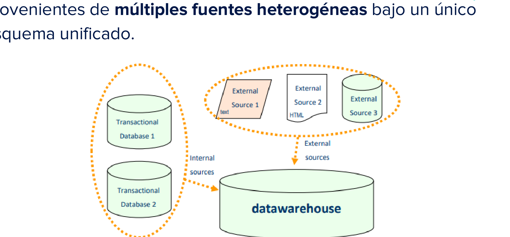
Es variable en el tiempo: los datos representan un periodo que se incrementa periódicamente mediante volcados.
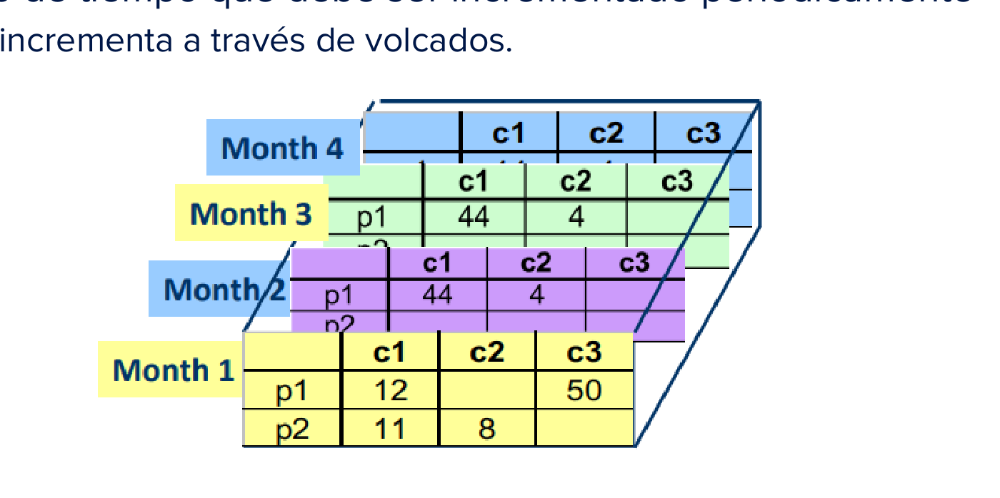
Cada volcado añade una "rodaja" nueva (mes 1, mes 2, mes 3...), de modo que el almacén guarda la evolución.Y es no volátil: los datos no se actualizan, solo se incrementan. Mientras la base de datos operacional recibe INSERT, UPDATE, DELETE y SELECT, en el almacén solo hay cargas y consultas (SELECT).
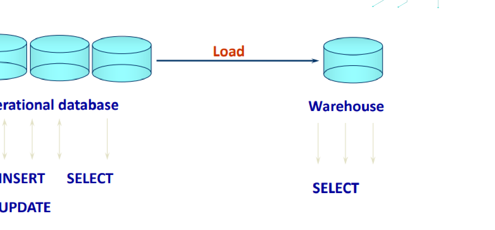
Frente a esto, los sistemas operacionales soportan múltiples usuarios, son sistemas críticos que requieren alta disponibilidad y tienen un diseño normalizado y optimizado para evitar redundancia y mantener la integridad.
1.2 Objetivos de los sistemas DW/BI
1.2.1 Los siete objetivos
- Facilidad en el acceso a los datos: "simple y rápido", con herramientas fáciles de usar, contenido entendible para los usuarios de negocio (no solo para desarrolladores) y tiempos de respuesta interactivos para explorar los datos.
- Presentación consistente de la información: debe ser fiable y consistente. Como los datos vienen de fuentes distintas, es clave el preprocesado y que etiquetas y definiciones sean consistentes.
- Adaptación a los cambios: se diseña asumiendo que los cambios son inevitables, y esos cambios no deben invalidar ni los datos ni las aplicaciones previas.
- Información a tiempo para decidir: los datos crudos (RAW) deben convertirse en información en un tiempo realista.
- Seguridad: la información confidencial es uno de los activos más valiosos, y hay que protegerla.
- Base autorizada y confiable para decidir: debe contener los datos correctos.
- Aceptación por los usuarios: usar el sistema DW/BI es típicamente opcional, así que es clave que los usuarios aprecien su valor añadido y lo utilicen.
Los requisitos 6 y 7 son clave, pero a menudo se ignoran.
1.2.2 Responsabilidades del gestor DW/BI
Su primera tarea es comprender a los usuarios de negocio: sus responsabilidades y objetivos, qué decisiones esperan tomar con el sistema, quiénes pueden tomar decisiones de impacto con esa información y quiénes podrían sacar partido del almacén de datos.
Después debe dar acceso fácil a información y analíticas de calidad y relevantes, lo que implica elegir, de entre muchas fuentes, los datos más robustos; generar interfaces y aplicaciones simples y dirigidas por plantillas; asegurar que los datos son precisos, confiables y etiquetados de forma consistente; monitorizar la precisión a lo largo del tiempo, y adaptarse a requisitos, prioridades y fuentes de datos cambiantes.
Por último, debe mantener el entorno DW/BI: actualizarlo regularmente, atribuirse parte del crédito de las decisiones empresariales tomadas con él para justificar personal y recursos, y mantener la confianza de los usuarios de negocio y satisfechos a usuarios, gestores y desarrolladores.
1.3 Modelado dimensional
1.3.1 Qué es y por qué se usa
El modelado dimensional modela las particularidades de las actividades o procesos de negocio de una organización. Es el estándar de facto porque cubre a la vez dos requisitos esenciales: que los datos sean fácilmente entendibles por los usuarios y que las consultas tengan alto rendimiento. Lo consigue creando bases de datos simples, y esa simplicidad asegura que los usuarios reconozcan los datos como su modelo de negocio y que el software pueda navegar y generar resultados rápido.
El ejemplo típico: un ejecutivo describe su negocio diciendo "vendemos productos en varios mercados y medimos nuestro rendimiento a lo largo del tiempo". Los diseñadores piensan intuitivamente en un cubo de datos cuyos ejes son producto, mercado y tiempo. Poder visualizar algo abstracto (el modelo de negocio) como algo concreto y "tangible" es el punto clave.
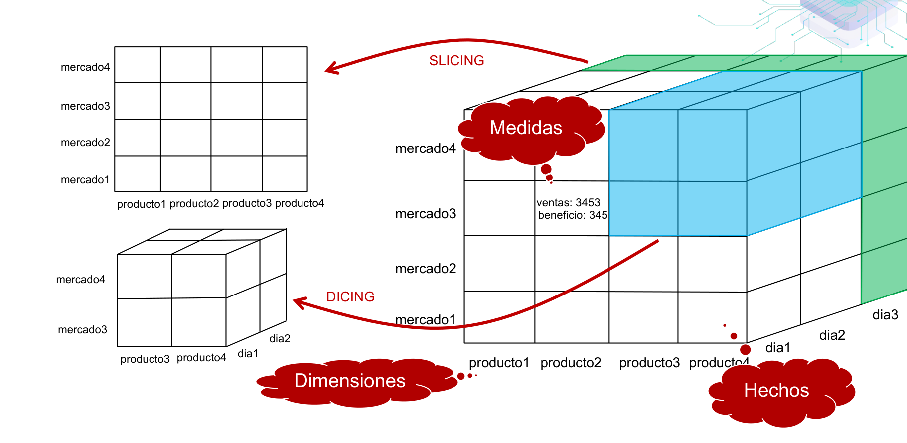
Cada eje del cubo es una dimensión (producto, mercado, día) y cada celda guarda los hechos con sus medidas (ventas: 3453, beneficio: 345). Cortar el cubo por un valor de una dimensión es slicing; quedarse con un bloque acotando varias dimensiones es dicing.Analogía: el cubo es una hoja de cálculo en 3D
Una tabla de Excel tiene dos ejes: filas y columnas (por ejemplo, productos y meses). El cubo añade más ejes, uno por dimensión. "¿Cuánto vendimos del producto 2, en el mercado 3, el día 1?" es simplemente mirar una celda del cubo; y "¿cuánto vendimos por producto?" es aplastar el cubo sumando a lo largo de los otros ejes.
1.3.2 Operaciones OLAP
Sobre ese cubo se definen cinco operaciones. El roll-up (también drill-up o agregación) permite subir en la jerarquía, agrupando todos los valores de un nivel bajo un mismo valor del nivel superior: pasar de datos diarios a semanales, o de regionales a país.
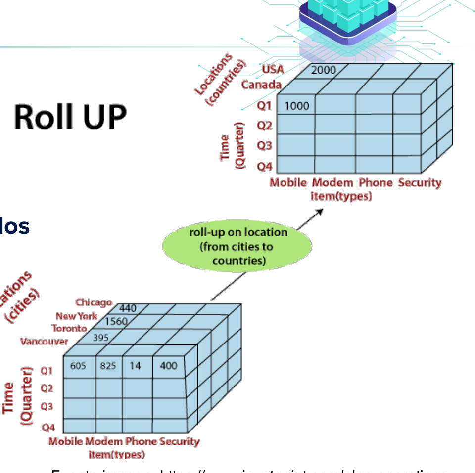
Se pasa de ciudades (Chicago, Nueva York...) a países (USA, Canadá): los valores de cada ciudad se suman en el país.El drill-down es la operación contraria: bajamos en la jerarquía desagregando, de datos menos detallados a más detallados (por ejemplo, de datos mensuales a diarios).
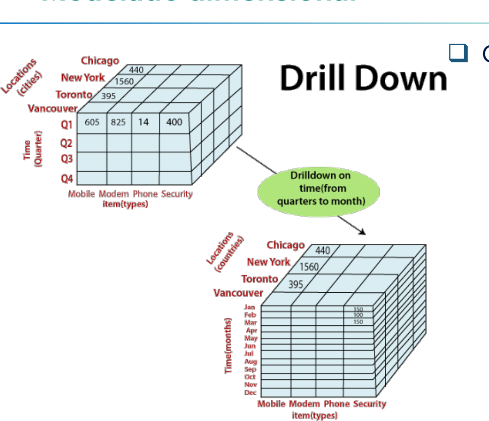
De trimestres (Q1–Q4) a meses: cada trimestre se abre en sus meses.El slice selecciona en una o varias dimensiones: es el subconjunto del cubo correspondiente a un valor determinado de una o más dimensiones, con lo que se pierde esa dimensión.
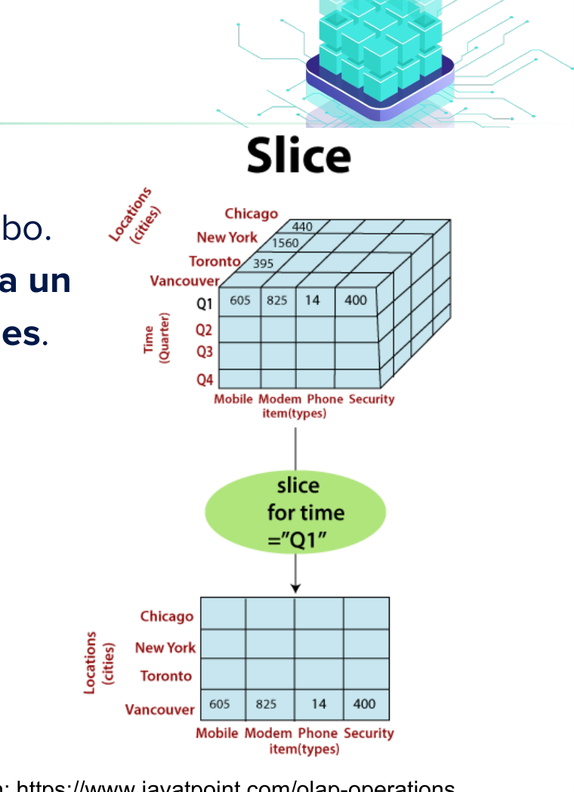
Slice para tiempo = "Q1": queda una tabla plana de ciudades × artículos solo del primer trimestre.El dice es similar, pero sin reducir el número de dimensiones: selecciona secciones del cubo estableciendo rangos en una o más dimensiones.
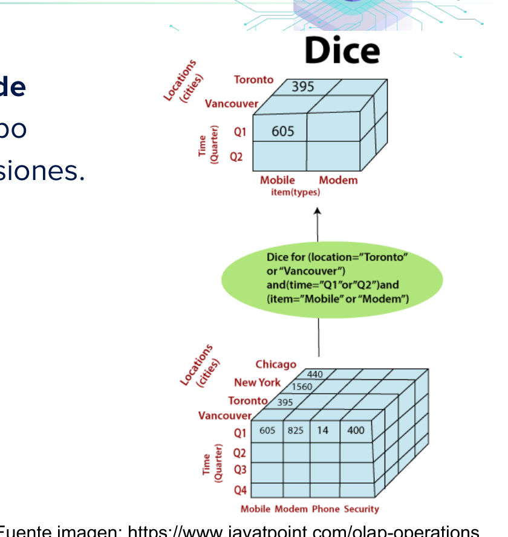
Dice para localización = Toronto o Vancouver, tiempo = Q1 o Q2 y artículo = Mobile o Modem: sigue siendo un cubo, pero más pequeño.El pivot permite rotar el cubo y presentar diferentes planos, reordenando las dimensiones.
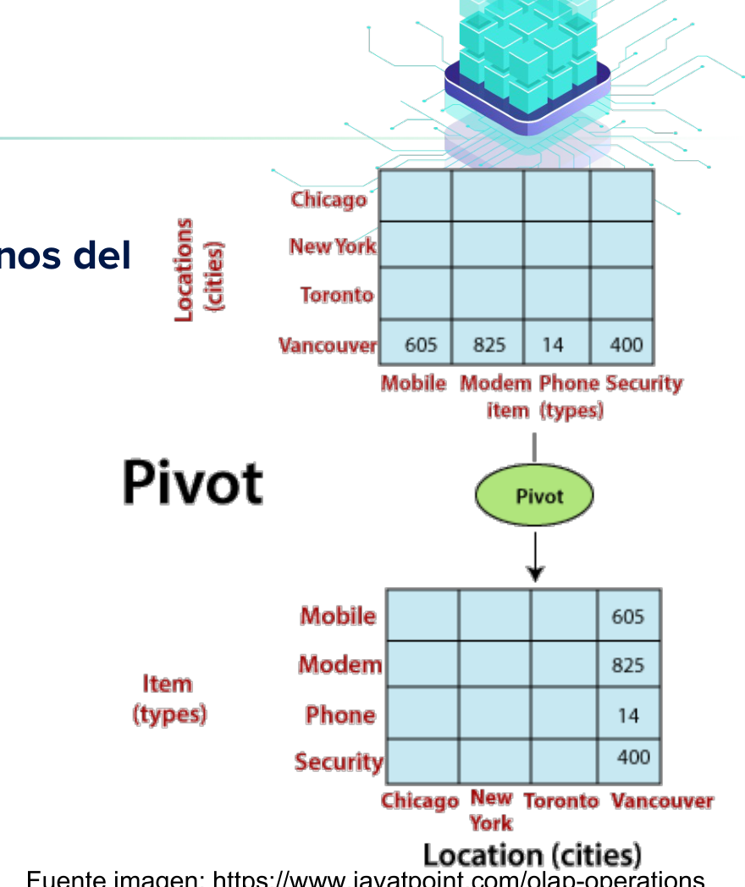
Las mismas cifras, con los artículos en las filas y las ciudades en las columnas en vez de al revés.Para entenderlo mejor
Cubos OLAP y sus operaciones — las cinco operaciones explicadas sobre un cubo (vídeo, 8:39).
1.3.3 ¿Se puede hacer la analítica sobre la base de datos normalizada?
La primera pregunta es si pueden convivir el sistema operacional y el DW/BI en la misma base de datos, manteniendo la operativa transaccional (OLTP) y haciendo la analítica (OLAP) encima. La respuesta es que aparecen problemas de eficiencia en la operativa diaria, porque las consultas OLAP colisionan con las OLTP.
La segunda es si vale con hacer una copia directa del sistema operacional para analizar sobre ella. Tampoco: hay problemas de eficiencia, porque falta un diseño específico y optimizado para OLAP (las consultas necesitarían muchísimos JOINs) y las consultas interactivas a menudo no son viables. Además, los usuarios tienen necesidades diferentes y los modelos normalizados son complejos de entender, así que al usuario le costaría obtener los datos que necesita. Y por último, los almacenes de datos tienen características diferenciadoras (por ejemplo, un sistema operacional no suele guardar histórico) que implican un diseño específico.
La conclusión es que en un DW los datos se guardan típicamente en bases de datos relacionales, pero sin estructuras normalizadas. Un modelo dimensional contiene la misma información que uno normalizado, pero almacenada de forma que facilita la comprensión del usuario, optimiza el rendimiento de las consultas y proporciona resiliencia al cambio.
1.3.4 Esquema en estrella frente a cubos OLAP
El diseño lógico es común; lo que cambia es la implementación física. Si el modelo dimensional se implementa en una base de datos relacional, el esquema más usado es el esquema en estrella, llamado así porque la tabla de hechos queda en el centro rodeada por las tablas de dimensiones.
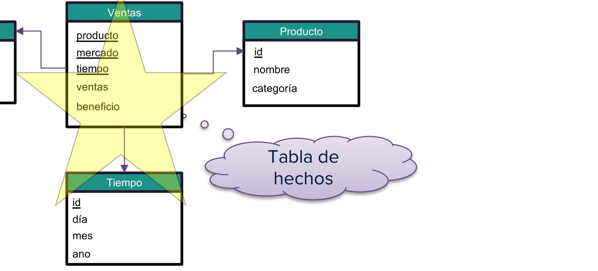
Si se implementa en una base de datos multidimensional, tenemos un cubo OLAP, donde los datos se almacenan e indexan con formatos y técnicas diseñadas para datos dimensionales.
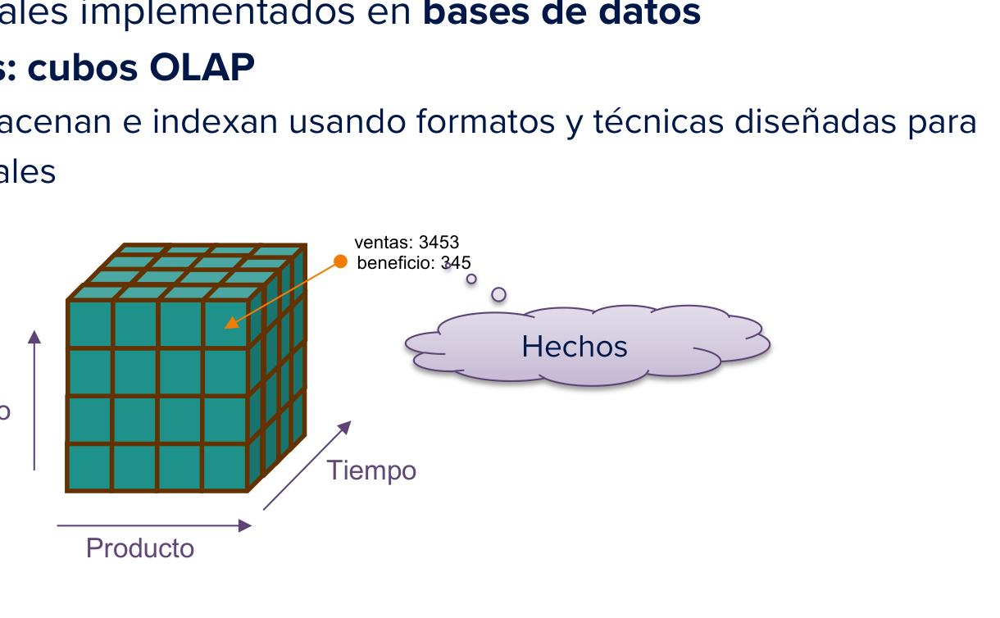
Los cubos OLAP son típicamente más eficientes en consulta y análisis, porque el motor suele crear y administrar agregaciones o resúmenes precalculados; permiten drill down/up o añadir y quitar atributos sin generar nuevas consultas y con alto rendimiento, y ofrecen funciones analíticas que no están en SQL. A cambio, la carga y actualización de datos es más costosa.
Al decidir si desplegarlos hay que tener en cuenta que las bases de datos relacionales son estables y confiables para copias y recuperaciones, y que la diferencia de rendimiento entre ambas es cada vez menor, por los avances en hardware y en tecnologías relacionales como el almacenamiento en columnas. Además, las estructuras de los cubos varían según el fabricante, lo que dificulta la portabilidad de las aplicaciones BI.
A favor de los cubos: ofrecen opciones de seguridad más sofisticadas (por ejemplo, limitar el acceso al detalle y permitirlo a los agregados) y capacidades analíticas más amplias, al no estar restringidos por las limitaciones de SQL, que es quizá la razón principal para elegirlos. En contra: tienen dificultades para actualizar los datos una vez creados, lo que penaliza los cambios en las dimensiones, y no soportan bien todos los tipos de tablas de hechos (en particular las instantáneas acumuladas). Su sintaxis de consulta específica también es un arma de doble filo: da mejores capacidades analíticas y soporta mejor las jerarquías, pero hay que aprenderla.
1.3.5 Tablas de hechos
Todas las medidas importantes para la toma de decisiones de un proceso de negocio deben estar en la tabla de hechos. Como suponen una gran cantidad de datos, no deberían estar replicadas en varios lugares de la organización. Cada fila corresponde a un evento que genera medidas: el término "hecho" representa una medida de negocio.
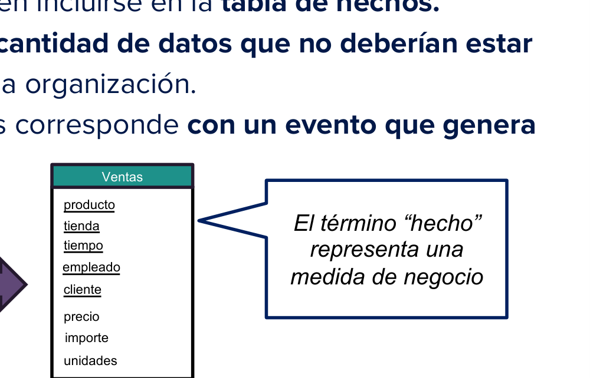
Los datos de cada fila corresponden a un nivel de detalle llamado granularidad (por ejemplo, una fila por cada producto vendido en una transacción). Todas las filas deben tener la misma granularidad, y un evento del mundo físico tiene una relación 1-1 con una única fila de la tabla.
Analogía: el ticket de la compra
La tabla de hechos son las líneas del ticket: cada línea es un evento (este producto, en esta tienda, a esta hora) con sus medidas (precio, unidades, importe). Las dimensiones son los datos de la cabecera y las etiquetas: quién te atendió, en qué tienda, qué día, qué producto exactamente. La granularidad es decidir si guardas una fila por línea del ticket o una por ticket entero: si guardas solo el total del ticket, ya no podrás preguntar nunca qué producto concreto se vendió.
Según cómo se puedan sumar, hay tres tipos de hechos. Los aditivos pueden sumarse por todas las dimensiones (el importe de una venta en euros). Los semiaditivos solo por algunas: el saldo de una cuenta no puede sumarse por la dimensión tiempo (sumar el saldo de enero y el de febrero no significa nada). Los no aditivos no pueden sumarse por ninguna: el precio unitario de un producto o un % de descuento.
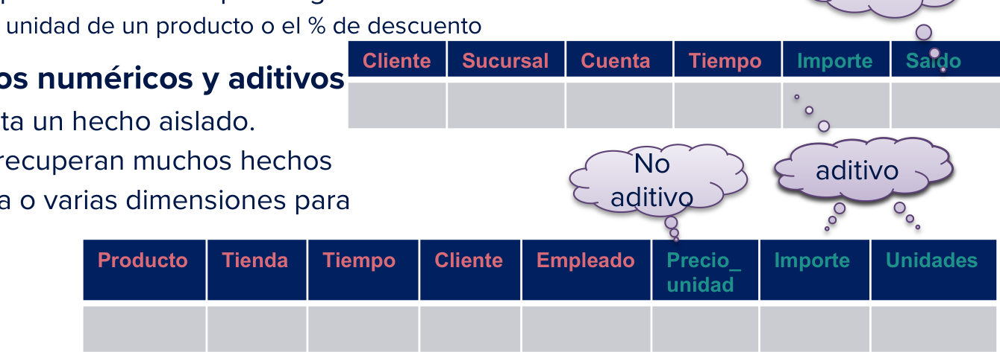
Los hechos más útiles son los numéricos y aditivos, porque normalmente no se consulta un hecho aislado: lo típico es recuperar muchos hechos, agruparlos por una o varias dimensiones y agregarlos.
Normalmente las medidas toman valores reales en un espacio continuo, algo que no suele pasar con los atributos de las dimensiones. Teóricamente pueden ser textuales, pero es muy raro: un campo de texto suele ser la descripción de algo con un conjunto limitado de valores, y entonces conviene llevarlo a una tabla de dimensiones para ahorrar espacio. Si el texto se repite habitualmente, claramente va en una dimensión; si es siempre diferente, suele ser texto libre del que será muy difícil sacar información para OLAP, salvo con técnicas de procesamiento de lenguaje natural.
Cuando no hay datos para una combinación de dimensiones, no se añade una fila de ceros: la tabla de hechos solo recoge actividad real, no la no-actividad (si un producto no se vende, no se crea su fila). Por eso las tablas de hechos tienden a ser dispersas (sparse), aunque aun así representan en torno al 90% del espacio de un modelo dimensional, y suelen ser profundas en filas y estrechas en columnas.
Las tablas de hechos contienen claves foráneas (FK) que apuntan a las dimensiones, lo que garantiza la integridad referencial; a los hechos se accede a través de las dimensiones mediante JOINs, y son las dimensiones las que dan el contexto descriptivo. La clave primaria de la tabla de hechos es la combinación (clave compuesta) de un subconjunto de esas claves foráneas, el subconjunto de dimensiones que identifica unívocamente cada fila.
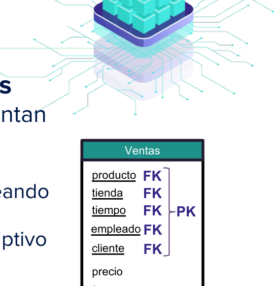
1.3.6 Tipos de tablas de hechos según su granularidad
Las tablas de hechos de transacciones son las más comunes. Su fuente son los procesos de negocio transaccionales y su granularidad deriva directamente del evento: una fila por transacción o una fila por cada línea de una transacción. A menudo son dispersas (en una tienda no se venden todos los productos en cada transacción) y generan tablas de gran tamaño, con medidas que suelen ser aditivas.
Además de las referencias a las dimensiones, pueden contener marcas de tiempo y dimensiones degeneradas, que son claves de dimensión que NO tienen una tabla de dimensión asociada y se guardan en la propia tabla de hechos: número de factura, id de pedido o número de transacción bancaria. La marca temporal se separa a menudo de la dimensión de tiempo para evitar una explosión de filas: una dimensión de tiempo con 20 años de historia son 7.300 filas, pero con granularidad de segundo serían más de 31 millones por año.
Las instantáneas periódicas (periodic snapshot) tienen como granularidad un periodo de tiempo (día, mes, año), que no se puede expresar a nivel de transacción. Cada hecho agrega los eventos ocurridos durante el periodo. Son más densas que las de transacción, lo que genera retos: incluso sin datos puede insertarse una fila con ceros (por ejemplo, stock 0) y el volumen puede ser muy alto, así que a veces hay que llegar a compromisos como reducir la frecuencia de las instantáneas con el tiempo.
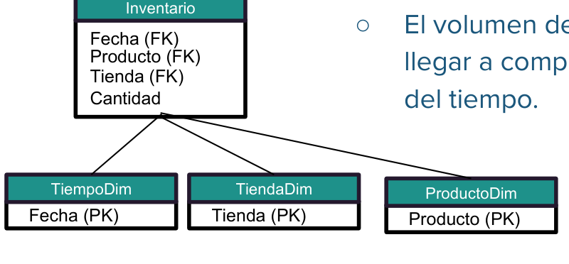
Inventario por tienda: una fila por fecha, producto y tienda, con la cantidad en ese momento.Las instantáneas acumuladas (accumulated snapshot) son menos habituales, pero interesantes para analizar flujos de trabajo: procesos con un inicio, un fin y varios hitos intermedios. Agregan los datos de los eventos de cada hito y pueden incluir medidas de diferencias entre hitos (retrasos). Su particularidad es que las filas se van actualizando a medida que se completan los hitos, así que solo al terminar el proceso la fila está completa.
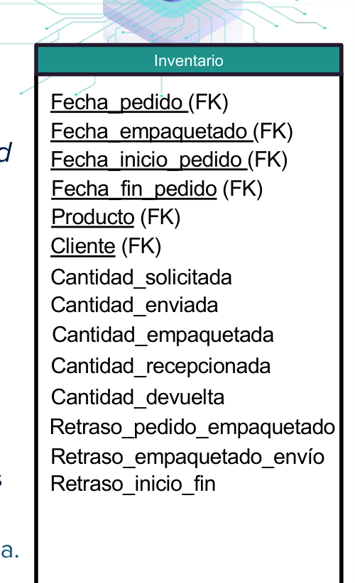
Una fila por pedido, con una fecha por hito (pedido, empaquetado, inicio, fin), las cantidades y los retrasos entre hitos.Estas tablas tienen una referencia a la dimensión temporal por cada hito, lo que se conoce como role playing (la misma dimensión "juega varios papeles"). No todos los productos OLAP soportan role playing ni el renombramiento de atributos y, al requerir actualizaciones, son un tipo de tabla más difícil de implementar con cubos OLAP.
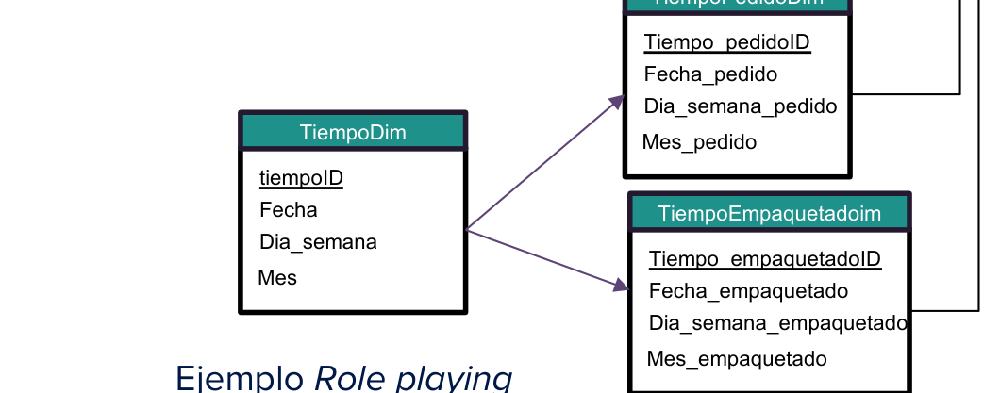
La dimensión Tiempo se usa dos veces con nombres distintos: TiempoPedidoDim y TiempoEmpaquetadoDim.1.3.7 Tablas de dimensiones
Las dimensiones proporcionan el contexto necesario para entender los eventos: describen el quién, qué, dónde, cómo y por qué de cada evento. Pueden tener muchos atributos (50-100 columnas es normal) y pocas filas comparadas con la tabla de hechos. Tienen una única clave primaria, que aparece como foránea en las tablas de hechos relacionadas.
Sus atributos se usan para filtrar (restricciones en las consultas), agrupar datos y generar etiquetas en informes y gráficas, y son fundamentales para que el sistema sea entendible por los usuarios.
Sus valores deben ser palabras reales explicativas y no abreviaciones crípticas: hay que minimizar el uso de códigos y promover atributos textuales, incluyendo códigos solo si tienen un significado claro y conocido por TODOS los usuarios, o si hacen falta para comunicarse con los usuarios del sistema operacional, pero entonces junto a los atributos descriptivos. Cuando un código tiene información embebida (por ejemplo, los 6 primeros dígitos son el ID de cliente y los 4 últimos el del pedido), debe separarse en varios atributos, idealmente textuales, para facilitar filtrado, agrupado e informes.
En muchos aspectos, un almacén de datos es tan bueno como lo sean los atributos de sus dimensiones: la capacidad analítica depende mucho de su calidad y profundidad, y un conjunto robusto de atributos es lo que da capacidad de slicing y dicing.
Una duda frecuente es qué hacer con los atributos numéricos: ¿dimensión o medida? Normalmente no es difícil: los valores continuos son medidas y los valores discretos (lista corta) que participan en restricciones y etiquetas son atributos de dimensión. Ejemplo con el precio de un producto: en una tienda de todo a 10, 20 y 30 euros es un atributo de dimensión; si los precios cambian mucho (un continuo), es una medida.
Las dimensiones contienen a menudo relaciones jerárquicas (producto → marca → país, o calle → ciudad → región → país), y esa información jerárquica se almacena de forma redundante para facilitar y optimizar las consultas.
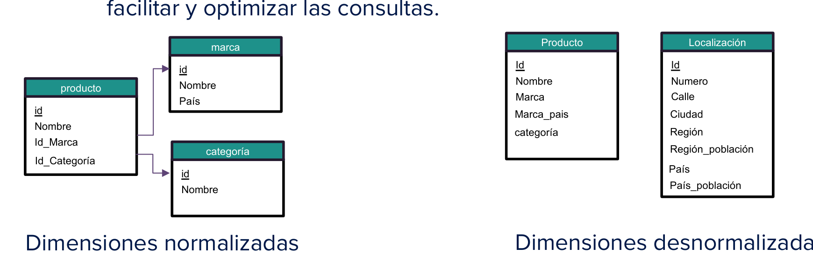
Izquierda: la jerarquía repartida en varias tablas (producto → marca → categoría). Derecha: la misma información aplanada en una sola tabla, repitiendo marca, país, región, etc.Por eso hay que resistirse a normalizar el modelo. Un modelo normalizado dejaría de ser una estrella y pasaría a ser un snowflake (copo de nieve). La normalización tiene un impacto residual en el tamaño de la base de datos, porque las dimensiones tienen pocas filas, pero un impacto negativo en el rendimiento, al requerir más JOINs.
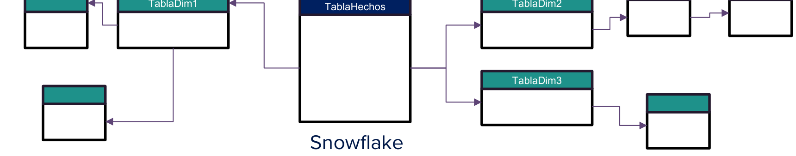
Para entenderlo mejor
Tabla de hechos y dimensiones (Modelo Estrella) — qué va en cada tipo de tabla, con un ejemplo (vídeo, 6:30). Esquemas del modelo dimensional — estrella frente a copo de nieve y cuándo usar cada uno (vídeo, 6 min).
1.3.8 Hechos y dimensiones unidos: el esquema en estrella
Cada proceso de negocio se representa con un modelo dimensional formado por una tabla de hechos rodeada de tablas de dimensiones. El esquema resultante es simple y simétrico, lo que facilita entender y navegar por los datos y hace que los usuarios reconozcan su negocio en él. Lo caracterizan un número reducido de tablas y descriptores significativos, así que es fácil de navegar y difícil equivocarse.
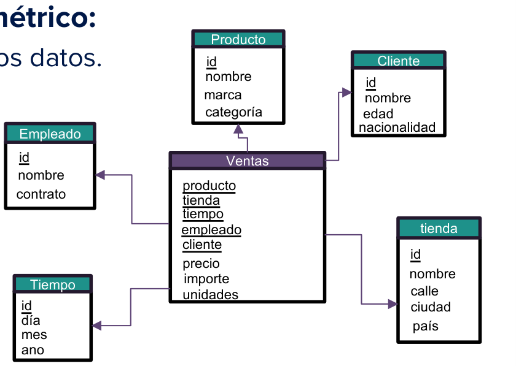
Esa simplicidad también da rendimiento: hay menos JOINs, se filtra primero en las dimensiones y luego se hace el JOIN con la tabla de hechos, y solo hace falta pasar una vez por la tabla de hechos. Además, todas las dimensiones son equivalentes: son puntos de entrada a los hechos, y el modelo no tiene sesgo hacia ciertas consultas.
El esquema es fácil de extender, de tres formas. Se pueden añadir medidas nuevas a la tabla de hechos siempre que la granularidad sea consistente, intentando que la medida se genere en el mismo evento; si no hay datos previos, se rellenan con NULLs. Se pueden añadir atributos a las dimensiones, rellenando lo anterior con un "No disponible" o similar, y las aplicaciones anteriores seguirán funcionando porque desconocen el cambio. Y se pueden añadir dimensiones nuevas siempre que cada hecho se asocie a un solo elemento de la nueva dimensión, lo que requiere una nueva clave externa en la tabla de hechos y probablemente una entrada por defecto en la dimensión.
Conviene recordar que los datos atómicos (no agregados) son los más expresivos: son la base de las tablas de hechos y reducen la probabilidad de no poder responder a una consulta futura.
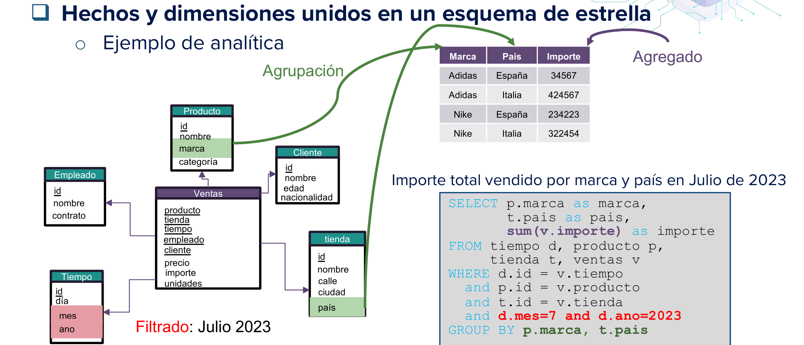
El ejemplo de la figura calcula el importe total vendido por marca y país en julio de 2023. La consulta hace el JOIN de la tabla de hechos ventas con las dimensiones tiempo, producto y tienda, filtra por d.mes=7 and d.ano=2023, agrupa por p.marca, t.pais y agrega con sum(v.importe):
SELECT p.marca as marca, t.pais as pais, sum(v.importe) as importe
FROM tiempo d, producto p, tienda t, ventas v
WHERE d.id = v.tiempo and p.id = v.producto and t.id = v.tienda
and d.mes=7 and d.ano=2023
GROUP BY p.marca, t.pais
Es el patrón de casi toda consulta analítica: el filtro y la agrupación salen de atributos de las dimensiones, y la suma, de las medidas de los hechos.
1.3.9 Ejemplo completo: ventas en un supermercado
Las transparencias de prácticas desarrollan el ejemplo clásico de Kimball. El proceso de negocio son las ventas de una cadena de supermercados y cada línea de ticket es un evento de ese proceso: una compra genera un ticket con varias líneas, una por producto. De cada evento se guardan medidas (importe neto, unidades) en la tabla de hechos, y cada evento ocurre en un contexto (qué producto, qué cliente, qué tienda, qué fecha), que son las dimensiones.
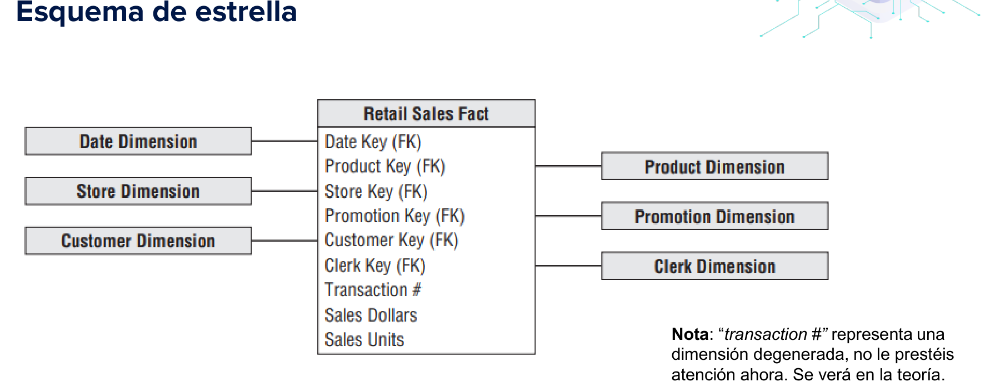
Retail Sales Fact guarda una fila por línea de ticket, con las FK a fecha, producto, tienda, promoción, cliente y empleado, y las medidas Sales Dollars y Sales Units. Transaction # es una dimensión degenerada.
La dimensión producto muestra cómo se guarda la jerarquía desnormalizada: cada fila repite marca, subcategoría, categoría y departamento del producto, además de atributos descriptivos como el contenido en grasa.
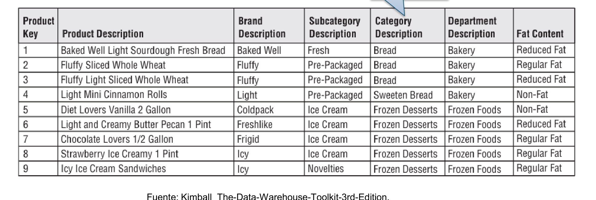
La dimensión tiempo es el ejemplo típico de dimensión rica en atributos: para cada fecha se precalculan el día de la semana, el mes, el trimestre, el año, el año fiscal y indicadores como si es festivo o día laborable. Así, preguntas como "ventas en días festivos" se responden filtrando por un atributo, sin calcular nada.
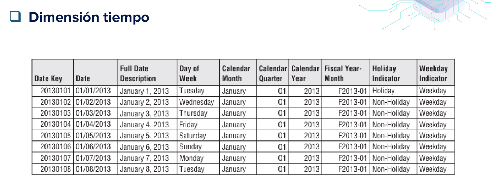
Con ese esquema, un informe como "total de ventas por zona y marca de producto durante junio de 2013" se resuelve filtrando por la dimensión fecha, agrupando por atributos de las dimensiones tienda (distrito) y producto (marca) y sumando la medida Sales Dollars.
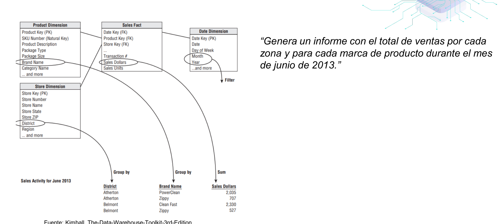
Un detalle de implementación que añaden las prácticas: las claves primarias de las dimensiones son subrogadas, es decir, identificadores propios del almacén (un entero sin significado) en lugar de la clave del sistema operacional. Esto es lo que permite, entre otras cosas, guardar varias versiones de un mismo elemento, como se ve en el apartado de dimensiones lentamente cambiantes.
1.4 Proceso de diseño en 4 pasos
Para diseñar un modelo dimensional se siguen cuatro pasos, en este orden.
- Seleccionar el proceso de negocio. Define el objetivo y es lo que permite declarar después la granularidad, las dimensiones y los hechos.
- Declarar la granularidad. Es el paso clave, porque "ata" al resto: debe escogerse antes de elegir dimensiones y hechos, ya que cada uno debe ser consistente con ella. Distintos niveles de granularidad no pueden coexistir en la misma tabla de hechos.
- Identificar las dimensiones. Son el quién, dónde, qué, cuándo, por qué y cómo, que ayudan a "pensar el problema". Son atributos descriptivos para agrupar, filtrar y etiquetar, y deben ser consistentes con la granularidad.
- Identificar los hechos. Son las medidas del proceso analizado, también consistentes con la granularidad: una fila de la tabla de hechos tiene una relación uno a uno con un evento de medición, tal como lo describe esa granularidad.
Analogía: montar el álbum de fotos antes de pegar las fotos
Primero eliges de qué va el álbum (el proceso: el viaje), luego decides qué es cada página (la granularidad: una foto por día, o una por ciudad). Solo entonces tiene sentido decidir qué etiquetas pones a cada página (dimensiones) y qué datos anotas (hechos). Si cambias de idea sobre qué es una página a mitad del álbum, todo lo anterior deja de encajar: por eso la granularidad se declara antes y no se mezcla.
Estas transparencias de prácticas son una **introducción complementaria**, no exhaustiva: la presentación de teoría es la referencia de cara al examen.
1.5 Dimensiones lentamente cambiantes (SCD)
Solemos pensar que el contexto que aportan las dimensiones es fijo, pero aunque los atributos son relativamente estables, pueden cambiar: un producto cambia de departamento, un cliente se muda, un empleado cambia de categoría. Ignorar esa volatilidad corrompe la precisión analítica, así que el diseñador debe fijar una estrategia de gestión de cambios para cada atributo de la dimensión.
Existen 8 tipos (del 0 al 7); algunos son muy específicos, otros son soluciones generales y habituales, y algunos son híbridos que combinan varios. La referencia es el capítulo 5 del libro de Kimball y Ross. Estos son los más populares.
Analogía: la ficha de un cliente
Imagina la ficha de papel de un cliente que se muda de ciudad. Puedes no tocar nunca el dato de origen (tipo 0), tachar la ciudad vieja y escribir la nueva perdiendo el pasado (tipo 1), archivar la ficha antigua y abrir una nueva con fechas de validez (tipo 2), o separar en otra ficha aparte los datos que cambian cada dos por tres (tipo 4).
El tipo 0, retener el original, significa que el valor nunca cambia tras su inserción inicial. Está pensado para atributos duraderos, como los vinculados al momento de creación (por ejemplo, la fecha de alta).
El tipo 1, sobrescribir el valor, reemplaza el valor viejo por el actual. Es simple y directo, no modifica la tabla de hechos ni hace crecer la dimensión, pero destruye la historia de forma permanente: ya no se podrá responder a "¿tuvo beneficios para las ventas el cambio de departamento?". Es apropiado para cambios menores (una falta de ortografía) o cuando no tiene sentido guardar el histórico.
| ProdID | SKU | Nombre | Departamento |
|---|---|---|---|
| 12345 | ABC922-Z | IntelliKidz |
Su efecto secundario es que las herramientas de BI dan resultados distintos antes y después del cambio: un informe de ventas agregadas por departamento cambia, los cálculos preagregados anteriores dejan de reflejar el estado actual y, si el modelo está sobre un cubo OLAP, hay que reprocesarlo.
El tipo 2, añadir una nueva fila, aísla la historia: en el momento del cambio se añade una fila nueva a la dimensión con una nueva clave subrogada. Los hechos pasados siguen apuntando a la clave antigua y los nuevos apuntan a la nueva fila, así que cada venta queda asociada al departamento que el producto tenía en ese momento. Es la aproximación más habitual y la más útil cuando no sabemos cómo evolucionarán los atributos. Se suele acompañar de metadatos: fecha de inicio, fecha de expiración e indicador de fila actual.
| ProdID | SKU | Nombre | Departamento | FechaInicio | FechaExpiración | IndicadorActual |
|---|---|---|---|---|---|---|
| 12345 | ABC922-Z | IntelliKidz | Educación | 01/01/2026 | 20/09/2026 | Expirado |
| 26584 | ABC922-Z | IntelliKidz | Estrategia | 21/09/2026 | 31/12/9999 | Actual |
Fíjate en que el ProdID (clave subrogada) cambia aunque el SKU y el nombre del producto sean los mismos, y en que la fila vigente usa la fecha de expiración 31/12/9999.
El tipo 4, añadir una minidimensión, resuelve el caso de los atributos muy volátiles, como los demográficos (franja de edad, franja de ingresos, estado civil). Si se aplicara el tipo 2 a una tabla de millones de clientes, la dimensión crecería de forma descontrolada y degradaría el rendimiento del almacén. La solución es sacar los atributos volátiles a una minidimensión: la tabla de hechos pasa a tener dos claves, la de la dimensión estable (cliente) y la de la minidimensión (por ejemplo, demográfica). Como esos atributos son rangos, el número de combinaciones posibles es asumible.
| DemográficaID | FranjaEdad | FrecuenciaCompra | FranjaIngresos |
|---|---|---|---|
| 1 | 21-25 | Baja | < 30.000 $ |
| 2 | 21-25 | Media | < 30.000 $ |
| 3 | 21-25 | Alta | < 30.000 $ |
| 4 | 21-25 | Baja | 30.000–39.999 $ |
| ... | ... | ... | ... |
| 142 | 26-30 | Baja | < 30.000 $ |
1.6 Arquitectura DW/BI de Kimball
1.6.1 Visión general
Kimball divide el sistema en cuatro componentes, y es importante entender el significado estratégico de cada uno para no confundir sus roles.
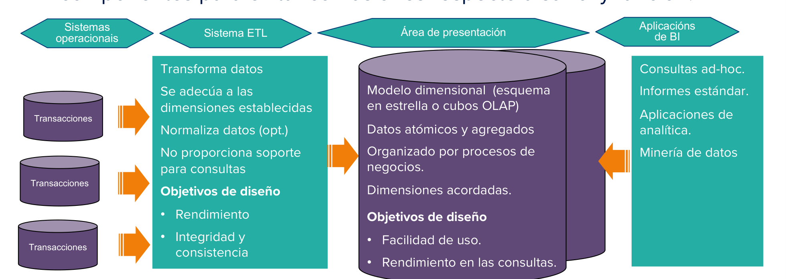
De izquierda a derecha: los sistemas operacionales generan transacciones; el sistema ETL transforma los datos, los adecúa a las dimensiones establecidas, opcionalmente los normaliza y no da soporte a consultas (sus objetivos de diseño son rendimiento, integridad y consistencia); el área de presentación guarda el modelo dimensional (estrella o cubos) con datos atómicos y agregados, organizado por procesos de negocio y con dimensiones acordadas (sus objetivos son facilidad de uso y rendimiento en las consultas); y las aplicaciones de BI permiten consultas ad-hoc, informes estándar, analítica y minería de datos.1.6.2 Sistemas operacionales
Capturan los datos de las transacciones del negocio durante la operativa diaria. Son un componente fuera del sistema DW/BI, sobre el que tendremos poco o ningún control. Sus consultas obtienen pocas filas y no son amplias ni inesperadas como en un DW/BI: están en el código de las aplicaciones y son muy previsibles.
Mantienen un histórico reducido (un buen sistema DW/BI minimiza la necesidad de guardar histórico en ellos) y a menudo no comparten datos con otros sistemas, por ser aplicaciones de propósito específico; este hándicap se reduce adoptando soluciones tipo ERP (Enterprise Resource Planning).
1.6.3 Sistema ETL (Extracción, Transformación y Carga)
Está formado por estructuras de datos y un conjunto de procesos, y tiene tres fases. En la extracción se leen y entienden las fuentes y se copian los datos necesarios al sistema ETL, obteniendo los datos "crudos". En la transformación se aplican operaciones como la limpieza de datos (data cleansing: valores nulos, formatos, corrección de errores, conflictos de dominio), la combinación de datos de múltiples fuentes y la eliminación de duplicados; estas operaciones aportan valor y, de forma colateral, permiten detectar errores en las fuentes que sirven para optimizar los sistemas operacionales. En la carga se llevan los datos transformados al modelo dimensional del área de presentación.
Buena parte de los subsistemas ETL se centran en el procesamiento de las dimensiones: asignación de claves subrogadas, transformación de códigos en atributos descriptivos, combinación y separación de atributos, combinación de estructuras para desnormalizar, etc. La preparación de las tablas de hechos es más directa, aunque requiere más tiempo de procesamiento por el volumen.
¿Conviene guardar los datos de forma normalizada dentro del ETL antes de cargarlos? En general no es buena aproximación: una vez validados, construir una base de datos en 3FN solo para volver a transformarla en estructuras desnormalizadas procesa los datos dos veces y gasta recursos. Si los datos ya llegan en 3FN, algunos desarrolladores se sienten más cómodos transformando sobre estructuras normalizadas, lo que es aceptable y discutible, pero no debe ser el objetivo principal; en todo caso esas estructuras quedan fuera del alcance de las consultas, porque no cumplen los requisitos de facilidad de uso y rendimiento. De hecho, algunos proyectos fallan por gastar demasiados recursos en conseguir una vista normalizada y completa de los datos de la organización.
Para entenderlo mejor
¿Qué es un ETL? Extraer, transformar y cargar datos — las tres fases con ejemplos (vídeo, 6:23).
1.6.4 Área de presentación
Es el componente donde los datos se almacenan, organizan y quedan disponibles para consulta y análisis, y es el único al que accede la comunidad que toma decisiones, a través de las aplicaciones de BI.
Kimball hace varias consideraciones sobre él. Los datos deben almacenarse y accederse mediante modelos dimensionales, implementados con SGBD o cubos OLAP; hoy esto apenas se discute, porque el modelo dimensional es la técnica más apropiada para presentar los datos a los usuarios. Deben tener el máximo detalle necesario (atómicos), lo que facilita resolver consultas futuras no predecibles, y pueden complementarse con agregados por rendimiento; no es aceptable que el almacén solo contenga agregados y que el usuario tenga que ir a un modelo normalizado para ver el detalle. Además, los modelos deben estructurarse sobre los eventos del proceso de negocio y nunca diseñarse pensando en los informes demandados en un momento concreto.
Como es habitual que varios departamentos participen en un mismo proceso de negocio, hay que construir un modelo común para que todos "vean lo mismo", en lugar de n modelos ligeramente distintos. Ahora bien, es poco realista construir el sistema completo de una vez, y construir piezas aisladas no da la consistencia buscada: la solución es una aproximación incremental sobre una arquitectura predefinida, la Enterprise data warehouse bus architecture.
Para ello hace falta un conjunto de dimensiones estable y acordado que se comparta entre los procesos de negocio. Si cada proceso usa dimensiones diferentes, se acaba con modelos ad-hoc que dan vistas incompatibles y no se pueden integrar. En una organización pueden convivir decenas de modelos que comparten dimensiones.
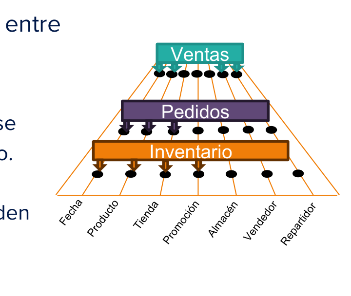
Los procesos de negocio (ventas, pedidos, inventario) comparten las mismas dimensiones: fecha, producto, tienda, promoción, almacén, vendedor, repartidor.En resumen, los datos del área de presentación son dimensionales, atómicos (opcionalmente con agregados por eficiencia), centrados en el proceso de negocio (no por departamentos) y comparten un conjunto común de dimensiones.
1.6.5 Aplicaciones de inteligencia de negocio
Son las aplicaciones con las que se hace la analítica de apoyo a la decisión. Las hay simples, que permiten consultas ad-hoc, y complejas, como la minería de datos. Las herramientas de consulta ad-hoc son muy potentes, pero requieren conocimientos técnicos que no todos los usuarios tienen, así que hacen falta aplicaciones parametrizables y con plantillas prediseñadas que no obliguen a construir la consulta completa. A veces, los resultados de las analíticas se cargan de vuelta como datos en otros componentes de la arquitectura (sistemas operacionales, ETL o área de presentación).
1.7 Arquitecturas alternativas
1.7.1 Data marts independientes
Cada departamento construye su propia solución, sin intención de compartirla ni integrarla: sus propias transacciones, su ETL, su data mart y su aplicación BI.
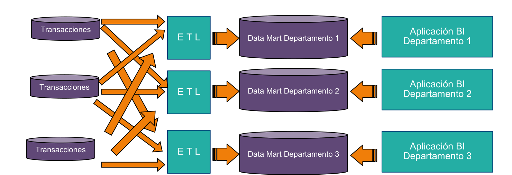
El problema es que varios departamentos suelen necesitar datos del mismo proceso de negocio, y sus informes y visiones no son consistentes. Aunque es habitual en organizaciones grandes, no tiene defensores: es una solución "rápida y barata" a corto plazo, pero totalmente ineficiente a largo plazo.
La organización acaba con muchos subsistemas con visiones distintas de los mismos procesos, lo que da resultados dispares sobre el rendimiento global y obliga a gastar tiempo y recursos debatiendo y unificando informes. El modelo dimensional se puede aplicar a nivel de data mart sin problema, pero esta arquitectura no sigue las recomendaciones generales: modelar por procesos de negocio y no por departamento, centrarse en los hechos atómicos y compartir dimensiones para mejorar integración y consistencia.
1.7.2 Arquitectura de Inmon: Hub-and-spoke (CIF)
En la Corporate Information Factory de Inmon, los datos se extraen de los sistemas operacionales mediante el sistema de Adquisición de Datos (equivalente al ETL) y los datos atómicos se almacenan en el EDW (Enterprise Data Warehouse), una base de datos en 3FN: aquí la normalización es obligatoria, y el EDW hace de integrador de datos de la organización, proporcionando consistencia. Ojo con la distinción que subraya la diapositiva: normalizar ≠ integrar.
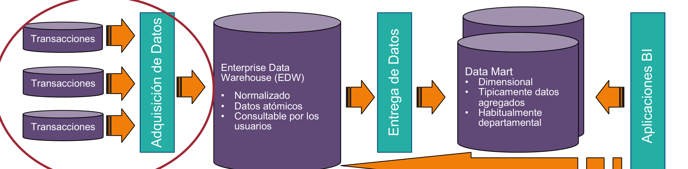
De ahí, el sistema de Entrega de Datos alimenta data marts dimensionales, que son típicamente departamentales (no centrados en procesos de negocio) y normalmente con datos agregados, ya que los atómicos están en el EDW. Algunas aplicaciones BI pueden consultar directamente el EDW.
Esa segunda transformación hace que sea complicado "seguir la pista" de un dato hasta el nivel atómico, sobre todo cuando hay transformaciones no básicas, como renombrar atributos o hacer cálculos alternativos por departamento. La opinión de Kimball es que una CIF extrema puede ser no funcional: si hay que consultar el EDW para obtener el detalle, el modelo normalizado es complejo para los usuarios y puede rendir mal; y si los data marts no acuerdan un conjunto común de dimensiones, darán visiones incompatibles.
1.7.3 Arquitectura híbrida
Combina las dos: mantiene el EDW normalizado con datos atómicos, pero no accesible para los usuarios, y añade un área de presentación al estilo Kimball, dimensional, con datos atómicos y agregados, centrada en procesos de negocio y con un conjunto común y acordado de dimensiones.
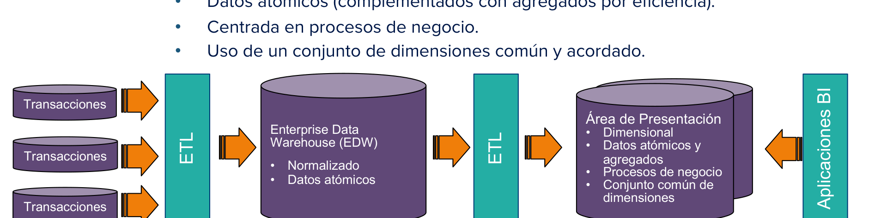
¿Lo mejor de los dos mundos? Depende: si ya se invirtió en un EDW en 3FN y no cubre las expectativas de los usuarios (usabilidad y rendimiento), puede ser una buena alternativa; pero si se empieza desde cero, requiere tiempo y dinero innecesarios.
Para entenderlo mejor
Let's Compare the Kimball and Inmon Data Warehouse Architectures — las dos filosofías comparadas, de abajo arriba frente a de arriba abajo (vídeo, 5 min, inglés).
1.8 Mitos del modelado dimensional
"Son solo para datos agregados". Falso: para poder responder a consultas futuras no previstas hay que guardar los datos con la máxima granularidad (atómicos), y los agregados se añaden como complemento para mejorar la eficiencia.
"Son departamentales, no de empresa". Falso: los modelos dimensionales deben organizarse por procesos de negocio (pedidos, facturación, gestión de clientes, recursos humanos, contabilidad, inventario...) y no por departamento.
"No son escalables". Falso: son extremadamente escalables, y en la práctica existen tablas de hechos con billones de filas. Además, los modelos normalizados y los dimensionales contienen la misma información y relaciones y pueden responder a las mismas preguntas, porque cada relación expresada en uno puede expresarse en el otro.
"Son para un uso predecible". Falso: no deben diseñarse para un informe o analítica concretos, sino centrados en los procesos de negocio, y deben almacenar información detallada para atender consultas no predecibles. El corolario es que son extremadamente flexibles, extensibles y adaptables al cambio.
"No pueden integrarse". Falso: se pueden integrar datos de varios modelos si se acuerda un conjunto común de dimensiones. La integración requiere etiquetas estandarizadas, valores acordados y definiciones claras de los conceptos. Sin ese conjunto común, se obtienen soluciones específicas por proceso que solo pueden usarse de forma aislada.
El tema sigue el libro de referencia Ralph Kimball y Margy Ross, The Data Warehouse Toolkit, 3ª edición (Wiley, 2013).
1.9 Ideas clave
- OLTP: sistemas operacionales, donde se "meten" los datos; transacciones rápidas, estado actual, sin histórico. OLAP: sistemas DW/BI, de donde se "saca" la información; consultas complejas sobre mucho volumen y con histórico.
- Objetivos DW/BI: acceso fácil, información consistente, adaptable al cambio, a tiempo, segura, base confiable para decidir y aceptada por los usuarios (los dos últimos, clave y a menudo ignorados).
- Modelado dimensional: entendible + rápido. Cubo con dimensiones (ejes) y hechos/medidas (celdas). Operaciones: roll-up, drill-down, slice, dice, pivot.
- No vale analizar sobre la BD normalizada: OLAP colisiona con OLTP, demasiados JOINs y modelos difíciles de entender para el usuario.
- Tabla de hechos: una fila por evento, misma granularidad, medidas aditivas / semiaditivas / no aditivas, dispersa (sin filas de ceros), ~90% del espacio, FKs a dimensiones y PK compuesta.
- Tipos: transacciones (la más común, con dimensiones degeneradas), instantánea periódica (granularidad = periodo, más densa) e instantánea acumulada (hitos de un flujo, se actualiza, usa role playing).
- Dimensiones: contexto (quién, qué, dónde, cómo, por qué), 50-100 atributos, textos explicativos y no códigos, jerarquías desnormalizadas a propósito. Normalizar → snowflake → más JOINs y peor rendimiento.
- Estrella: hechos en el centro, dimensiones alrededor; menos JOINs, todas las dimensiones equivalentes, fácil de extender (medidas, atributos, dimensiones). Filtrar y agrupar por dimensiones; sumar medidas.
- Kimball: sistemas operacionales → ETL (sin consultas; rendimiento, integridad, consistencia) → área de presentación (dimensional, atómica, por procesos, dimensiones comunes) → aplicaciones BI. Crecimiento incremental con la bus architecture.
- Alternativas: data marts independientes (rápido y barato, inconsistente a largo plazo), Inmon/CIF (EDW en 3FN + data marts departamentales agregados) e híbrida (EDW no accesible + área de presentación Kimball).
- Características del DW: repositorio centralizado de fuentes heterogéneas, variable en el tiempo (volcados) y no volátil (solo se incrementa).
- Diseño en 4 pasos: proceso de negocio → granularidad (ata al resto) → dimensiones → hechos. PKs de dimensiones subrogadas.
- SCD: tipo 0 (no cambia nunca), tipo 1 (sobrescribe y pierde historia), tipo 2 (nueva fila con nueva clave subrogada + fechas e indicador: la opción habitual), tipo 4 (minidimensión para atributos muy volátiles). Hay 8 tipos (0–7).
- Mitos: no son solo agregados, ni departamentales, ni poco escalables, ni para uso predecible, ni imposibles de integrar (con dimensiones comunes).